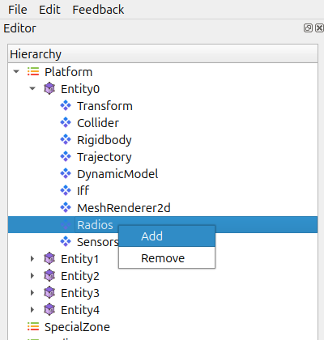
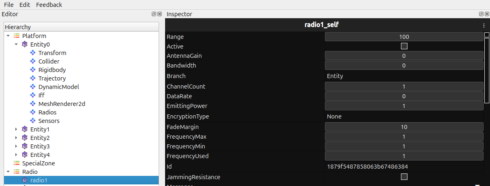

Radio System
The Radio System lets entities communicate using predefined radio profiles. It manages channel assignments, transmission behaviour, and the connection between radios and entities in the hierarchy.
Purpose of Radio
The Radio System helps you:
Enable communication between entities.
Assign and manage radio channels or frequencies.
Support simulation features that rely on radio messaging.
Confirm that radios are attached and configured correctly during debugging.
Attaching a Radio to an Entity
Select the entity in the Hierarchy.

Open the context menu or the toolbar.
{kind=link}

Choose Add Radio.
{kind=link}

A new radio instance is created and linked to that entity.
How the Radio System Works
Radios activate automatically once attached.
Transmission and reception depend on:
The assigned Radio Profile using Inspector Tab
Frequency Matching Rules
Any signal or scanning logic in the simulation

Recommended Usage
Assign radio profiles before starting the simulation to avoid “unconfigured radio” states.
Use clear, consistent names for channels and call signs when multiple radios are involved.
Attach radios to parent entities first if the hierarchy is still being set up.
Common Issues and Fixes
Radio not attaching
Make sure the entity exists in the Hierarchy.
Entity unable to transmit
The radio may not be linked correctly in the hierarchy.
Channel or frequency settings might be invalid.
Transmission permissions may be disabled in the profile.
Notes
Attaching a radio does not influence other entity systems unless they are explicitly connected.
Dynamically spawned entities receive radios only if configured to do so.
Radio channels do not enforce distance or signal range unless the simulation implements those features.